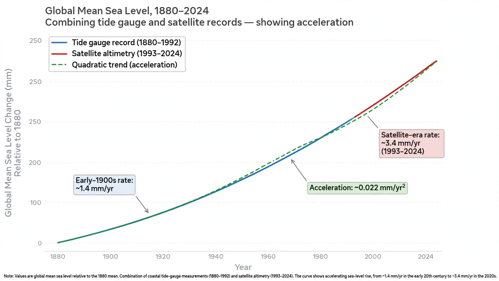
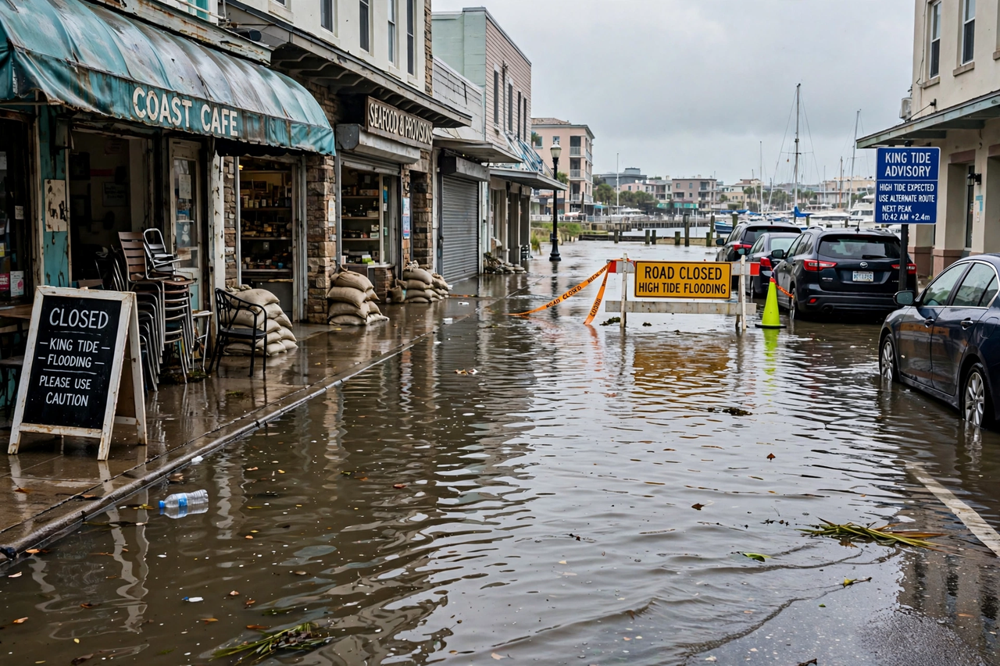

Sea level rise

Sea level rise is the increase in the mean level of the world's oceans, a central consequence of Climate change. Global mean sea level rose by roughly 20 centimetres between 1900 and the late 2010s, and the rate of rise is accelerating.
The two main causes are the thermal expansion of warming seawater and the addition of water from melting land ice — {L('Glacier','glaciers')} and the {L('Ice_sheet','ice sheets')} of Greenland and Antarctica.
Observations
Tide gauges provide records extending back more than a century; satellite altimetry since 1993 gives near-global coverage and shows the rate of rise increasing to roughly 3.7 millimetres per year in recent decades, approximately double the average rate of the 20th century.

Sea level does not rise uniformly. Ocean dynamics, winds, and the slow rebound or sinking of land after the last ice age mean some coasts experience much faster relative rise, while a few experience falls. The gravitational fingerprint of melting ice sheets also redistributes water: sea level falls near a shrinking ice sheet and rises more than average far from it.
Projections
The Intergovernmental Panel on Climate Change projects global mean sea level rise by 2100, relative to the recent past, of roughly 0.3–0.6 metres under low-emission scenarios and 0.6–1 metre or more under high-emission scenarios, with a low-confidence possibility of approaching 2 metres if ice-sheet instability processes engage. Rise continues for centuries under all scenarios because of the ocean's slow response.
Even the committed rise transforms coastal flood risk: events once expected once a century already occur far more frequently in many cities.
Impacts and adaptation
Impacts include coastal erosion, flooding of low-lying land and deltas, saltwater intrusion into aquifers and farmland, and existential threats to low island nations. Responses include sea walls and storm-surge barriers, restoring {L('Wetland','wetlands')} and {L('Mangrove','mangroves')}, raising buildings, and in some places planned retreat from the shore.
See also: Climate change · Global warming · Glacier · Ice sheet · Ocean